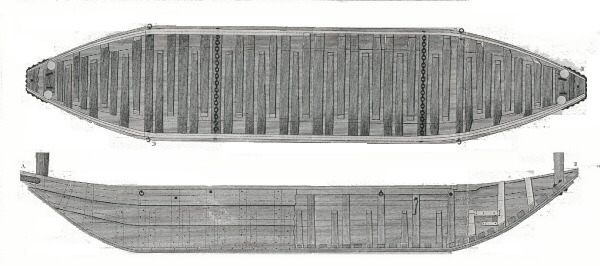
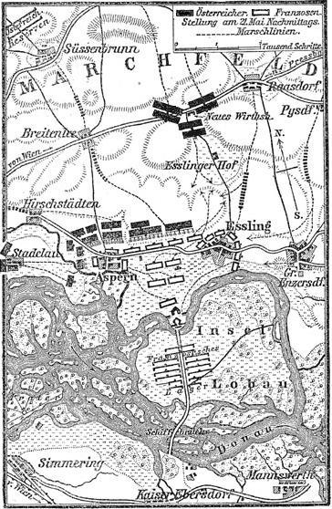
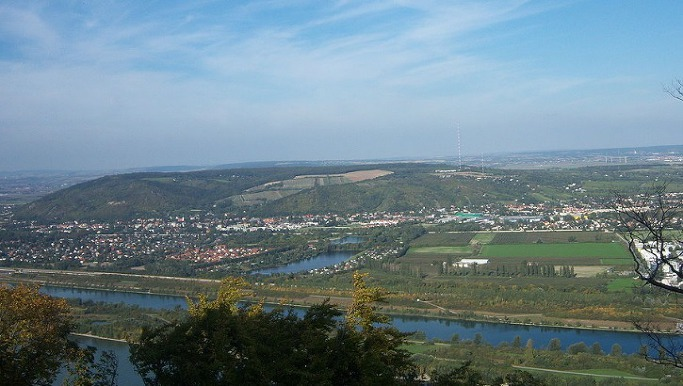

아스페른-에슬링 3편 - 순조로운(?) 도하
게시: 2017-02-19T18:43:44+09:00
포병 전문가인 베르트랑 장군의 계산에 따르면 대포가 건널만 한 부교를 짓기 위해서는 20피트, 즉 약 18미터마다 한 척의 보트가 필요했습니다. 그러자면 최소 80척의 보트가 필요했는데, 비엔나 일대를 나흘 동안 미친 듯 뒤지니 90척의 보트를 모을 수 있었습니다. 하지만 그 중 부교 건설에 사용될 만한 상태인 것은 70척 뿐이었고 그나마 부교를 위해 보트를 고정시키는데 꼭 필요했던 닻은 정말 구할 수가 없었습니다. 나폴레옹은 속이 탔습니다. 그는 작업 현장에 계속 참모를 파견하여 널빤지가 어쩌고 로프가 어쩌고 하는 지극히 잡다한 보고를 일일이 직접 챙기며 부교 건설을 위한 자재 확보에 심혈을 기울였고, 마침내 충분한 수의 보트를 확보하여 5월 19일부터는 부교 건설 작업에 들어갈 수 있다는 보고를 받았습니다. 그러나 끝끝내 닻은 구할 수 없었습니다. 도나우 강을 건너는데 쓰이거나 낚시질 등에 쓰이는 보트들이다 보니, 바다와는 달리 평소에 닻이 필요없었던 것입니다. 결국 임시 방편으로 어부들이 쓰는 통발에 포도탄을 재워 넣은 무게추를 닻 대신 쓰기로 했습니다.

(이 그림은 오스트리아 부교병들이 사용하던 평저선, 즉 bateau입니다. 프랑스군이 로바우 섬에서 도나우 강 좌안으로 건너기 위한 마지막 부교는 바로 이 오스트리아군의 평저선을 사용하여 건설되었습니다.)
나폴레옹은 5월 18일 쇤브룬 궁을 떠나 직접 카이저에버스도르프(Kaiserebersdorf)의 강변으로 갔습니다. 늦은 오후에 현장에 도착한 그는 6척의 대형 보트에 수백 명의 병사와 2문의 대포를 실어 도나우 강 속에 있는 첫번째 섬인 롭그룬트(Lobgrund) 섬에 보낼 때, 병사들에게 탄약이 분배되는 것을 직접 관리 감독하면서 거의 모든 병사 하나하나에게 일일이 격려의 말을 전할 정도로 작전에 심혈을 기울였습니다.
저녁 6시 경에 섬에 상륙한 프랑스군은 섬에서 경계 근무 중이던 소수의 오스트리아군을 간단히 제압하고 부교 건설을 시작했습니다. 작업은 순조로운 편이었습니다. 프랑스군이 건너야 했던 징검다리 섬들은 정확하게는 2개가 아니라 3개였고, 30m짜리 짧은 다리까지 합하면 총 4개의 다리를 놓아야 했습니다. 롭그룬트 섬과 로바우 섬은 불과 30m 폭의 강줄기로 갈라져 있었으므로, 그 사이의 다리는 매우 짧았습니다.
도나우 강의 우안
- 450m -
슈나이더그룬트(Schneidergrund)
- 225m -
롭그룬트(Lobgrund) 섬
- 30m -
로바우(Lobau)섬
- 80m -
도나우 강 좌안

(지도 아래 부분의 복잡한 섬 그림 중 가장 큰 것이 로바우 섬입니다. 5월 21일의 상황입니다.)
로바우 섬이 상당히 큰 섬이었으므로 좌안에서 우안까지는 총 2.5km 정도에 가까왔습니다. 프랑스군은 몰리토르(Molitor)의 사단을 앞세워 로바우 섬을 지키던 소규모 오스트리아군을 내쫓은 뒤, 로바우 섬에서 오스트리아군이 지키는 좌안까지의 마지막 4번째를 제외한 3개의 다리를 5월 19일 밤 사이에 다 놓고, 5월 20일 새벽에 마세나의 군단을 선두로 병력을 강 좌안으로 쏟아 부을 계획이었습니다. 로바우 섬이 아무리 크다고 해도 적의 대포알이 휩쓸 수 있는 평탄한 섬에 대군을 밀집시킬 수는 없었으므로, 베시에르의 기병사단들과 란의 군단은 강의 우안 저 너머에서 대기하다가 5월 20일 아침까지 카이저에버스도르프에 집결하도록 했습니다. 그에 덧붙여, 상크트-푈텐(Sankt-Poelten)에 있던 다부의 군단도 비엔나를 거쳐 카이저에버스도르프로 달려오도록 명령서를 보냈습니다.
그러는 사이 이 4개의 다리는 프랑스 부교 건설대에 의해 밤을 새워가며 동시에 놓아지고 있었습니다. 슈나이더그룬트에서 롭그룬트까지의 두번째 다리는 예정대로 5월 20일 아침까지 작업이 완료되었지만, 정작 도나우 좌안에서 슈나이더그룬트까지의 첫번째 다리는 정오가 되어서야 완료가 되었습니다. 그러나 이렇게 공병들이 죽을 힘을 다해 놓은 다리들은 여전히 내재된 위험을 가득 안고 있었습니다. 제대로 된 닻 대신, 포도탄으로 대충 만든 무게추를 대신 써서 고정시킨 것이다보니, 무척이나 불안했던 것입니다.
나폴레옹은 첫번쨰 다리가 완성된 5월 20일 이른 오후에 휘하 원수들과 함께 일련의 부교를 건너 로바우 섬으로 건너갔습니다. 오후 3시쯤 그는 몰리토르가 좌안으로 건너갈 최후의 다리를 놓을 위치를 확인한 뒤, 즉각 부교 건설을 지시했습니다. 다리는 저녁 6시까지는 완료될 예정이었습니다.
그 사이 프랑스군 병력들은 강의 우안, 즉 카이저에버스도르프에 속속 모여 차례로 부교를 건너 롭그룬트, 이어서 로바우 섬으로 집결하기 시작했습니다. 부교를 건너는 병사들은 불과 하루 사이에 강물이 눈에 띄게 불어난 것과, 부교가 상당히 부실해 보인다는 점을 걱정했습니다. 기병들은 말을 타고 건너지 않고 말에서 내려 말을 끌고 조심스레 부교를 건너야 했습니다.
병사들의 이런 걱정은 괜한 것이 아니었습니다. 아직 좌안으로의 최종 부교가 완성되기도 전인 오후 5시 30분 경, 불어난 강물에 떠내려온 무엇인가에 우안에서 롭스그룬트로 이어진 부교 일부가 끊어진 것입니다. 어떤 기록에는 통나무 등의 부유물이라고도 하고, 어떤 기록에는 보트라고도 하고, 또 오스트리아군이 고의로 떠내려보낸 보트라고도 합니다만, 어찌 되었건 이 사고에서 몇 척의 보트가 하류로 떠내려가 버렸습니다. 대기하고 있던 부교병(pontonnier)들이 서둘러 수리를 했으나, 임시방편이었던 이 수리조차도 완료되는데 다음날인 5월 21일 새벽 3시까지 걸렸습니다. 보트 등의 자재가 부족하여 이런저런 재료를 임시방편으로 조합해야 했었고, 물살이 점점 거세졌던 것입니다. 이렇게 물살이 거세졌던 것은 1809년 봄, 유난히 따뜻했던 날씨 때문이었습니다. 도나우 강의 수원지라고 할 수 있는 저 서쪽 슈바르츠발트(Schwarzwald, 검은숲)에 쌓인 눈이 평소보다 빨리 녹았던 것이지요. 도나우 강의 수위가 높아지는 것은 평년처럼 6월에나 시작될 것이라고 예상한 나폴레옹에게는 아직 상황이 얼마나 심각한지 와 닿지 않았겠습니다만, 상황은 점점 나빠지게 되어 있었습니다.
후방에서 이런 난리가 벌어진 것과는 무관하게, 저녁 6시 경 좌안으로의 다리가 완료되어 라살(Lasalle)의 지휘 하에 경기병대가 드디어 좌안의 평원으로 내달리기 시작했습니다. 소규모 정찰대였던 이들은 곧 오스트리아 기병대에 가로 막혔고, 별 다른 정보를 가져오지 못했습니다. 그러나 나폴레옹에게는 큰 상관이 없었습니다. 그는 혹시라도 좌안 교두보 바로 코 앞에 오스트리아군이 대규모 포병대를 방열하고 캐니스터탄을 쏘아대며 도하를 막으면 어쩌나 걱정했는데, 일단 그런 일은 없었던 것입니다. 프랑스군이 로바우섬을 통해 도하한다는 것을 오스트리아군이 몰랐거나, 알았다고 해도 당장 대규모 병력을 파견할 시간이 없었던 것으로 판단되었습니다.
만약 그것이 사실이라면 천만다행이었습니다. 우안의 부교가 끊어지는 바람에 5월 20일 저녁부터 5월 21일 새벽까지 근 9시간 동안이나 프랑스군의 도하가 중단된 상태라서, 이때 오스트리아군이 습격한다면 좌안으로 건너간 소수의 프랑스군은 꼼짝없이 당할 수 밖에 없었던 것입니다.

(비잠베르크 Bisamberg 산입니다. 이 비잠베르크는 약 350m 정도의 높이로서, 서울 인왕산 정도입니다. 이 일대에서 가장 높은 고지이므로, 카알 대공은 이 곳에 오스트리아군을 주둔시키고 관측병을 배치해 두었습니다.)
나폴레옹은 도하 지점의 좌측에 있던 작은 마을인 아스페른(Aspern)으로 마세나의 부대를 보내 점령하게 했습니다. 마세나는 밤 12시 경 그 일대에서 가장 높은 지점이었던 아스페른 교회탑에 올라가 정찰을 했는데, 오스트리아군의 캠프 불빛은 저 멀리 비잠베르크(Bisamberg) 산 쪽에서만 보였고, 그 아래부터 펼쳐진 마르쉐펠트의 넓은 평원 어디에도 군대의 숙영 불빛은 보이지 않았습니다. 마세나는 '평원에 오스트리아군은 없다'라고 나폴레옹에게 보고했고, 나폴레옹은 쾌재를 올렸습니다.
프랑스군이 방해도 받지 않고 도나우 좌안으로 쏟아져 들어오는 이 절대절명의 순간에, 대체 카알 대공의 오스트리아군은 무엇을 하고 있었던 것일까요 ?
Source : The Emperor's Friend: Marshal Jean Lannes By Margaret S. Chrisawn
Three Napoleonic Battles By Harold T. Parker
http://www.napoleon-series.org/military/battles/1809/AustrianWar/bridges/c_danube.html
https://de.wikipedia.org/wiki/Bisamberg_(Berg)
https://en.wikipedia.org/wiki/Antoine_Charles_Louis_de_Lasalle
https://en.wikipedia.org/wiki/Battle_of_Aspern-Essling